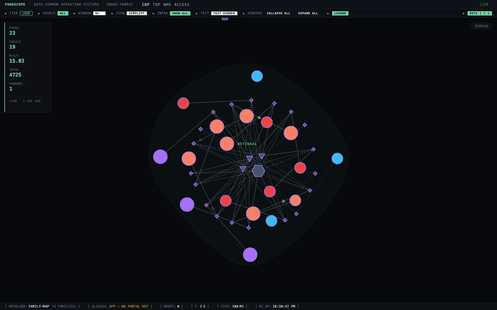
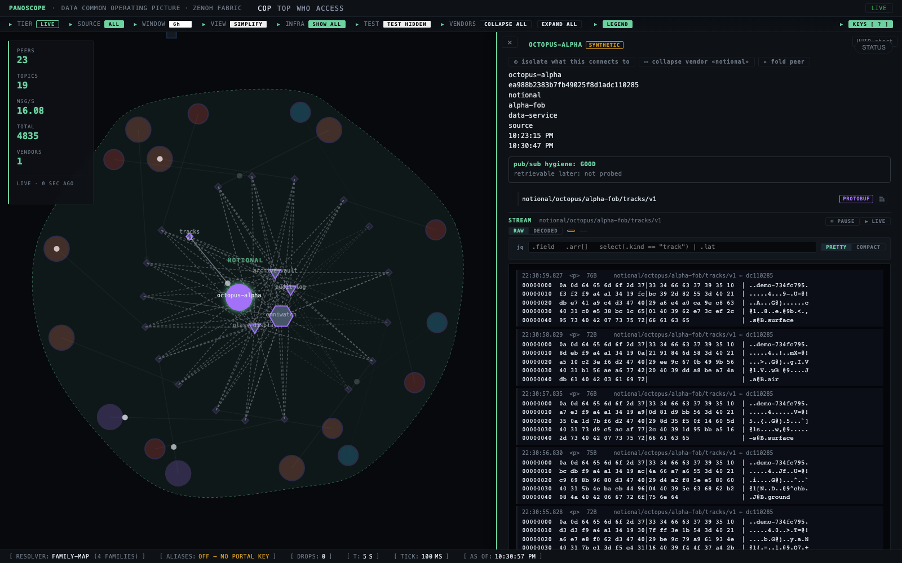

panoscope
The whole goatnet at a glance: who publishes, who subscribes, and what is flowing now.
panoscope draws a goat data fabric as it runs. Every peer is a node, every topic sits between its publishers and its subscribers, and a dot crosses the graph for each sampled message. Select a peer or topic and the side panel streams its messages. panoscope only reads: it subscribes to the fabric and declares no publisher.
$ git clone https://github.com/USAREUR-AF/goatstuff && cd goatstuff/ops/panoscope && ./demo.sh openPart of goat · Apache-2.0 · goatstuff ops/panoscope · version 0.0.1-alpha
- sensor
- data service
- c2
- effector
- topic
- subscriber
- publishes and subscribes
/api/view answer drawn on fixed rings, and every publish_sampled event its WebSocket sent, at the time it was sent. Recorded on a laptop from panoscope built from goatstuff main (69e8165), a local Zenoh 1.9.0 router and the synthetic fleet demo-roster.json. Every peer is synthetic.What it is
goat moves data between systems over a Zenoh data fabric: publishers put messages on keys, subscribers take the keys they want, and no broker sits in the middle. That makes the flow hard to see from any one place. panoscope is the web surface that shows it. It is a service in goatstuff, built on the shared crate panoscope-core in goatcore, and not needed to run a goatnet.
It reads and never writes.
panoscope opens one Zenoh client session, subscribes to ** and keeps a sample of each topic, by default up to 50 messages a second per topic (PANOSCOPE_SAMPLING_PER_TOPIC_EPS). It queries the router's admin space @/** on a timer to find peers that have not published yet. It declares no publisher.
Four pages, one binary.
COP: the graph, the side panel and the message stream. TOP: load per producer, the web form of goat top. WHO: the roster joined to live presence, for identity administrators. ACCESS: the catalog of topics and data types, and who can read what.
The pages are plain HTML, CSS and JavaScript modules with one vendored d3 file, embedded in the Rust binary. There is no build step.
Each viewer sees their own scope.
With PANOSCOPE_RBAC_MODE=enforce, a sign-in sidecar passes the viewer's groups, and every answer that names a topic, peer or payload is filtered to them: everything, all mission data, the organizations and producers they are granted, or a minimal floor. A read outside the scope is a 403. The default is off.
The same fleet, in panoscope.
Captures of panoscope itself during the recording above, at 1600 by 1000 pixels. panoscope has one dark theme.


The server decides what to draw. The browser draws it.
A fabric can carry more topics than a screen can hold. A background task rebuilds one FabricModel from what has arrived, then waits the longer of one second and twice its last build time. For each request, panoscope applies the viewer's scope, the time window, the filters, organization collapse, one grouping rule and an element cap, in that order, and returns exactly the elements the browser draws.
The grouping rule: a publisher's topics form a tree of key segments. More than 7 siblings of the same shape fold into one group (more than 16 when the names are words, such as sensor or imagery). A publisher draws at most 40 units, and a view at most 5,000 elements. When a view is cut, the canvas says so.
Every gesture edits the parameters the browser sends: double-click a group to open it, double-click a peer to fold it, collapse an organization. The same view comes back after a reload. An unchanged model answers 304 with no body.
The parameters one request sends
POST /api/view{ "window_hours": 1, "detail": "normal", "expand": [], "fold_peers": [], "collapse_orgs": [], "source": "all", "infra": "all", "test": "hide" }
What came back for the fleet above
totals {"peers":23,"topics":19,"groups":0,"orgs":1,"elements":136}limits {"max_elements":5000,"publisher_budget":40,"max_open_units":2000}
What a user does, and what it changes
| Gesture | Effect |
|---|---|
| click | Select. Everything within two hops stays lit; the rest dims. |
| double-click | Open or close the group, peer or organization under the cursor. |
| / | Search every topic the viewer can see, including topics inside groups. |
| f | Draw only what the selection is connected to. esc leaves. |
| ] · ? | Hide the side panel · show every key. |
ops/panoscope/src/zenoh_client.rs, src/view/ and frontend/web/src/view-client.js and session.js in goatstuff. Solid teal: data arriving from the fabric and sampled publishes going to the browser. Dashed: queries a viewer's request can cause. The figure scrolls sideways.A viewer's demand never becomes fabric load.
goat's rule for every web surface (ADR 1123): answer from what is already held, and where the fabric must be asked, bound the path. panoscope is the one surface that queries the fabric on request. It does so to show the last message of a topic that is quiet now, and to check whether a publisher's topics can be retrieved from storage.
The three paths that can query (/api/samples, /api/samples/decoded and /api/publisher/hygiene) share one budget of four queries in flight for the whole process. A request that finds the budget full does not wait. It keeps the answer it had: an empty stream, or "unconfirmed".
The browser holds its side of the rule in session.js. A 401 ends polling and reloads the page once into sign-in. A 403 is an answer, not a failure. Other failures back off, doubling, with ±25% jitter. A hidden tab does not poll.
It says when the picture is old or thinned.
Every state the page can be in has a visible name, so a busy fabric is not mistaken for a broken page.
| Shown | Means |
|---|---|
LIVE · 1 SEC AGO | The last refresh landed this long ago. It turns STALE after two failures in a row, or when the age passes a floor that allows for a slow network path. |
LIVE SLOWDEGRADED AUSTERE | How fast the browser draws: under 33 ms a frame, to 100, to 300, above 300. Each step turns off motion, pauses layout or polls less. |
WATCHFUL | The fabric carries 50 to 200 messages a second; dots show on the selection only. |
BUSY · DOTS OFF | Above 200 messages a second; edge thickness carries the rate. |
— | No answer from panoscope yet. A zero is shown only after the server has answered. |
If drawing a new view fails, the page keeps the last good picture on screen and shows the error.
Quick start
The demo needs Docker. It runs a Zenoh router, one container that plays the 22 synthetic peers of demo-roster.json, and panoscope, then opens http://127.0.0.1:8080. The first build compiles from source and takes a while; later starts take seconds.
git clone https://github.com/USAREUR-AF/goatstuffcd goatstuff/ops/panoscope./demo.sh open./demo.sh status ./demo.sh logs ./demo.sh down
Without Docker, run panoscope with Cargo against any Zenoh router. A debug build reads frontend/web/ from disk, so an edited page shows on reload:
cd goatstuff/ops/panoscopePANOSCOPE_BIND=127.0.0.1:8080 PANOSCOPE_ZENOH_ENDPOINT=tcp/127.0.0.1:7447 cargo run
The browser tests mock the API and the WebSocket, so no backend runs:
cd goatstuff/ops/panoscope/frontend && npm ci && npx playwright install chromium && npx playwright test
Local demo guide · Operator runbook · The view model · goat, the whole system